import matplotlib
%matplotlib ipympl
import matplotlib.pyplot as plt
import numpy as np
xx = np.arange(0,20,0.1)
plt.figure(1, figsize=[10,3])
plt.plot(xx,np.sqrt(xx), 'k-')Einführung
Organisation
Kontakt und Prüfung
- Vorlesung und Übung
- Sprechstunde
- Termine nach Vereinbarung
- BSL mündlich 20 Minuten
- Termine nach Vereinbarung

Organisation
Konzept
- Konzept der Vorlesung: Flip-the-classroom @www_fliptheclassroom
- Erarbeitung der Grundlagen erfolgt mit den vorbereiteten Videos zu Hause
- Der Stoff für eine Einheit wird spätestens eine Woche vorher zur Verfügung gestellt
- Im Präsenztermin diskutieren wir Ihre Probleme gemeinsam
- Keine Wiederholung des Stoffes
- Keine Präsenz-Pflicht
- Alle Materialien zum erfolgreichen Bestehen der BSL sind online
Organisation
Vorgehensmöglichkeiten
Zu jeder Vorlesung gibt es eine Übung. Sie können daher den Stoff auf unterschiedlichen Wegen erarbeiten:
Vorlesungs-basiert
- Vorlesung durcharbeiten
- Bearbeitung der Übung
Übungs-basiert
- Bearbeitung der Übung bis Sie nicht mehr weiter kommen
- Einen Teil der Vorlesung bearbeiten
- Mit Übung fortfahren
- Weiter bei (2.)
Inhalt
Zeitplan
| Vorlesung | |
|---|---|
| Einführung | 1 |
| FVM und Randbedingungen | 2 |
| Python und FiPy | 3 |
| Löser | 4 |
| Numerische Lösung der inkompressiblen Navier-Stokes-Gleichungen | 5/6 |
| Parallele Optimierung und Sensitivitätsanalyse | 7 |
| Übung | |
|---|---|
| Eindimensionale Konvektion-Diffusion | 1 |
| Löser | 2 |
| SIMPLE-Verfahren | 3/4 |
| Optimierung | 5 |
6 Vorlesungen in 7 x 90 Minuten und 4 Übungen in 5 x 90 Minuten
Inhalt
Überblick
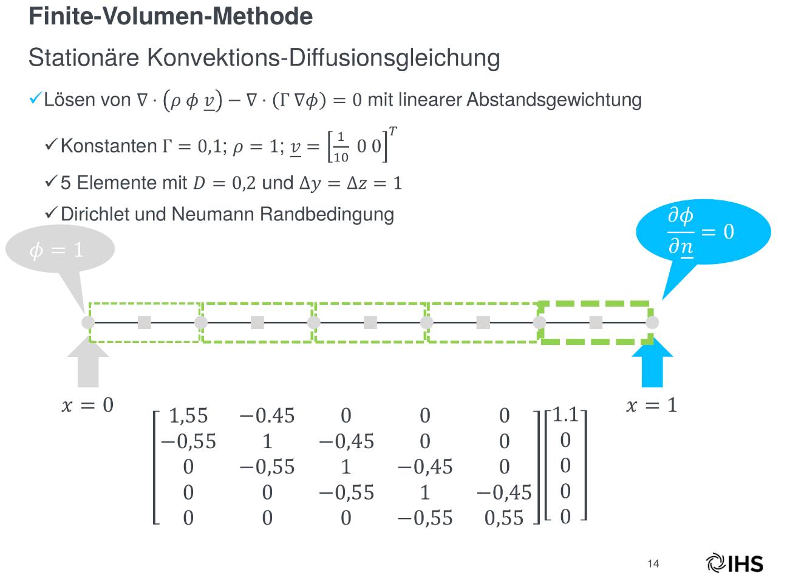
Vorlesung
- Kurze Wiederholung der Finite-Volumen-Methode
- Behandlung von Rändern im Berechnungsgebiet
- Diskretisierung von Dirichlet und Neumann Randbedingungen
Übung
- Lösung 1D-Konvektion-Diffusion
Inhalt
Überblick
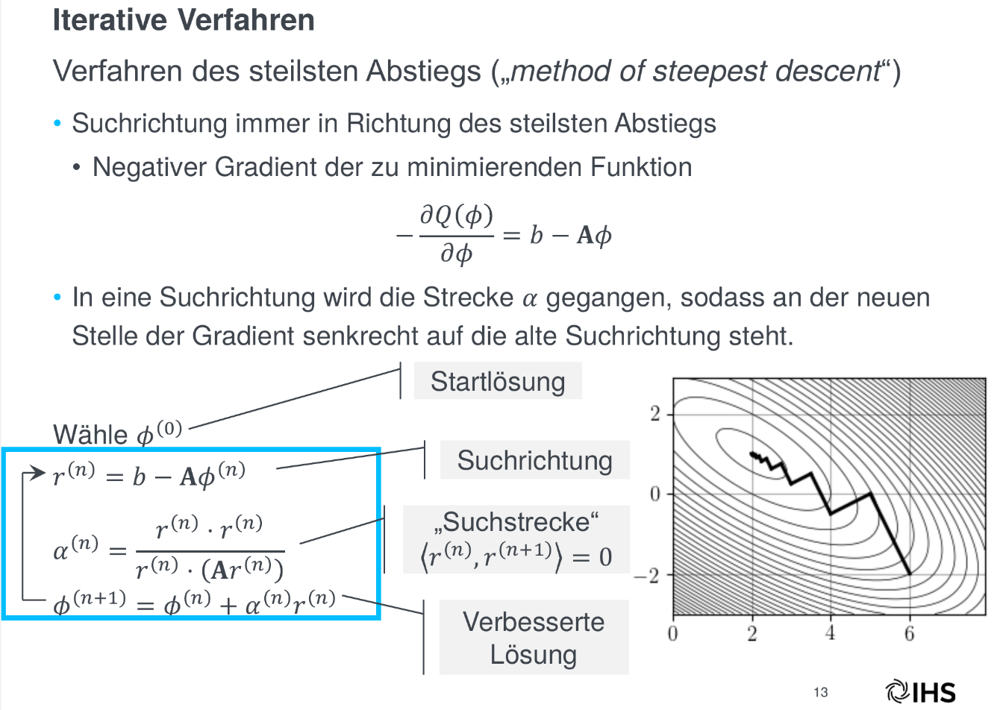
Vorlesung
- Unterscheidung direkte und indirekte Verfahren
- Einführung in iterative Gleichungslöser
- Splitting-Verfahren
- Gradientenverfahren
- Bedingungen für Konvergenz
Übung
- Programmierung ausgewählter Verfahren
Inhalt
Überblick
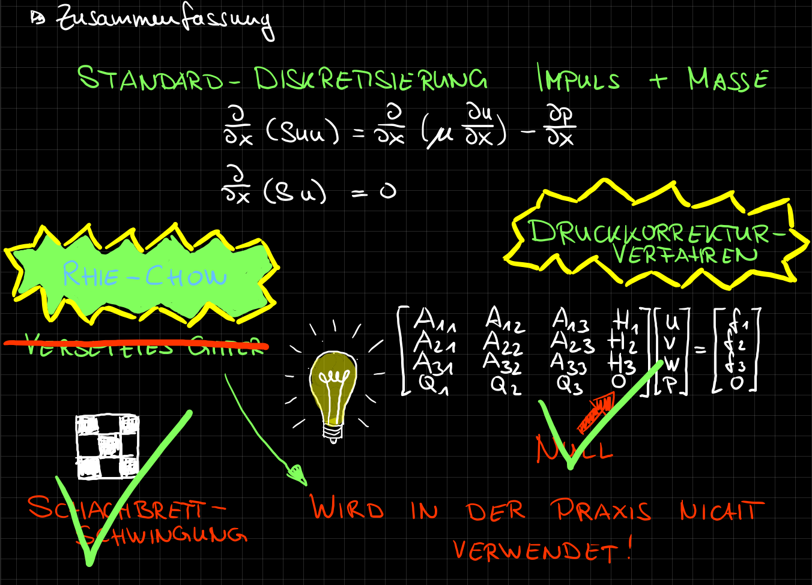
Vorlesung
- Probleme beim Lösen der inkompressiblen Navier-Stokes-Gleichungen (Sattelpunktprobleme)
- Theoretische Herleitung des SIMPLE-Verfahrens
Übung
- Programmierung des SIMPLE-Verfahrens
- Lösung einer Hohlraumströmung (Cavity-Flow)
Inhalt
Überblick
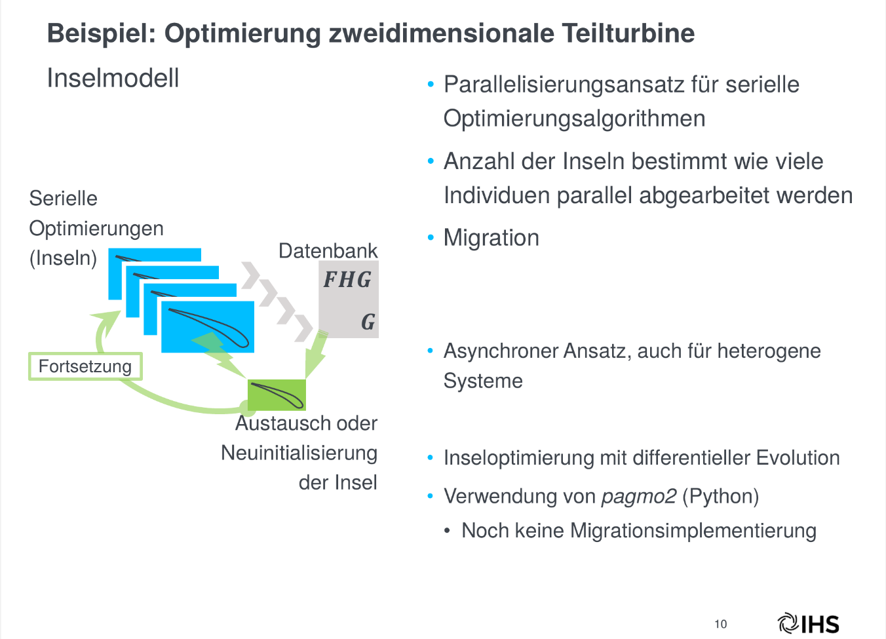
Vorlesung
- Parallele Optimierung
- Grundlagen für eine Multi-Deme-Parallelisierung
Übung
- Vergleich zwischen serieller und paralleler Optimierung
Inhalt
Überblick
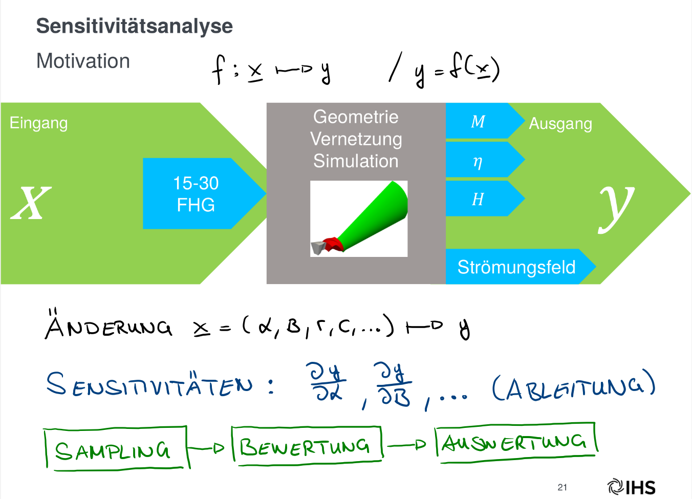
Vorlesung
- Beschreibung Sensitivitätsanalyse
- Morris-Methode zur effizienten Untersuchung von Systemen mit vielen Unbekannten
Vorraussetzungen
Was sollten Sie mitbingen?
Freude an der Numerik
Ideal: Numerische Strömungsmechanik mit Optimierungsanwendung 1 gehört
Keine starken Abneigungen gegen Integrale, Matrizen, Vektoren, Differentialgleichungen, …
Spaß am Programmieren
Ideal: Kenntnisse in Python oder einer anderen objekt-orientierten Sprache und Erfahrungen mit “open-source”
Bereitschaft Rückmeldung zu geben und die Veranstaltung aktiv mitzugestalten
Vorraussetzungen
Was brauchen Sie?
- Browser
- www
Welche Hilfsmittel werden verwendet?
- Python (Versionen 3.6, 3.7 oder 3.12)

- FiPy @www_fipy
- Jupyter @www_jupyter
- Conceptboard zur Vorlesung
Optionale Zusatzliteratur: @Moukalled_2016, @Weicker_2015, @Ferziger_2020 und @Versteeg_2007
Conceptboard
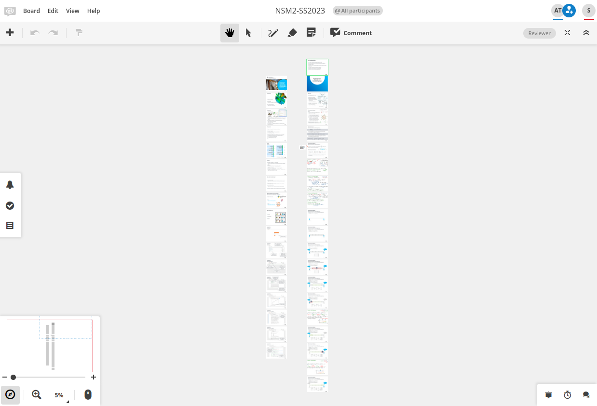
- Link zum Board finden Sie auf der Kursseite
- Durch einen Klick auf Abschnitte gelangen Sie zu den Unterlagen der jeweiligen Vorlesung
Conceptboard
Zum Beispiel zur Einheit Finite-Volumen-Methode und Randbedingungen
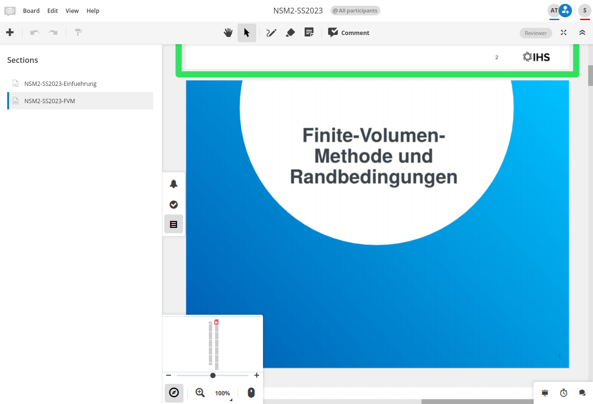
Conceptboard
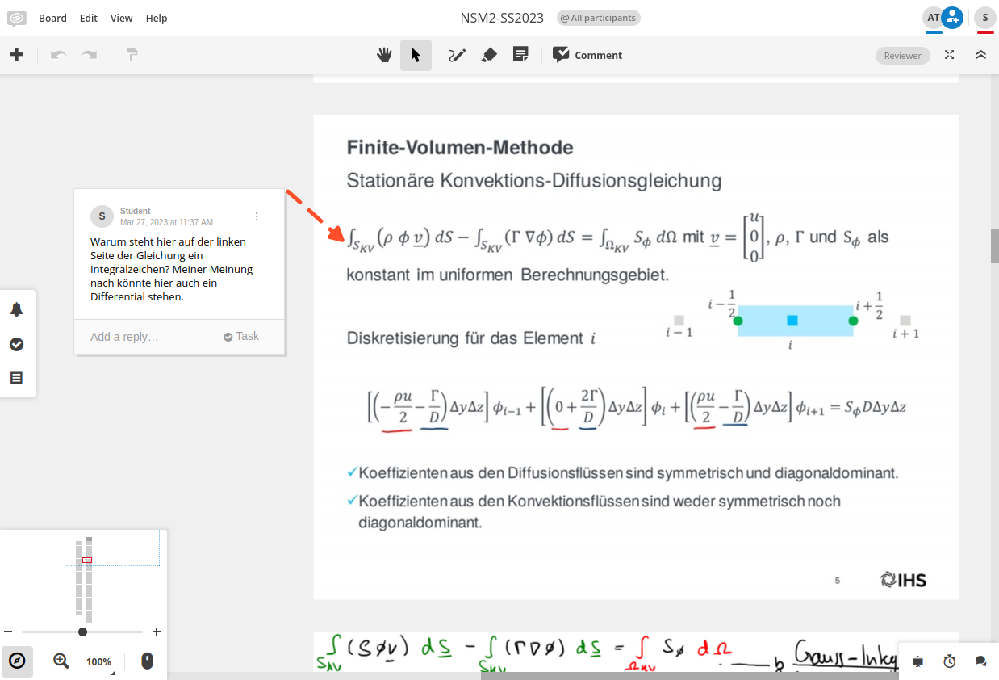
- Durch die Kommentarfunktion können Sie Fragen, Anmerkungen, Kritik, Fehlerkorrekturen, … in das Board zu den jeweiligen Folien einfügen.
- Bitte kommentieren Sie alles was Ihnen auffällt und wo Sie Dinge nicht verstehen. Es hilft allen anderen Studierenden!
- Das Board dient auch zur Kommunikation zwischen Studierenden. Gerne dürfen Sie auf Kommentare von anderen antworten.
Conceptboard
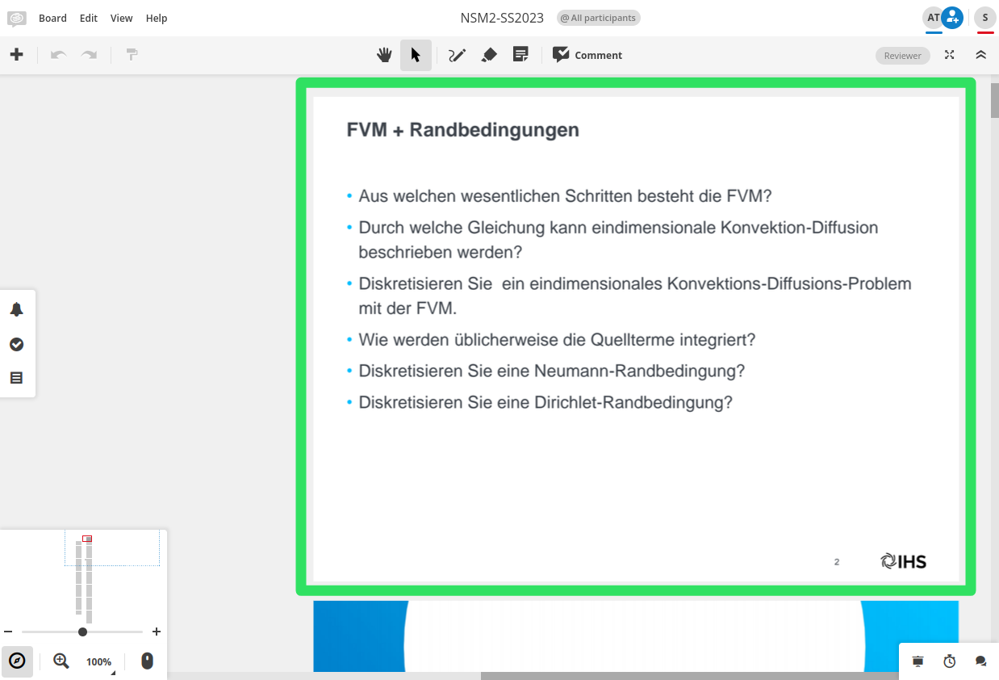
- Jeweils über der Titelfolie einer Einheit befinden sich die Kurzfragen. Gerne können Sie die Fragen durch Kommentare beantworten und gemeinsam diskutieren.
Jupyterhub
Anmeldung
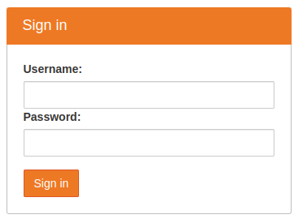
- Zur Anmeldung müssen Sie den Benutzername und das Passwort eingeben.
- Beim Hub unter www.jupyterhub.ihs.uni-stuttgart.de muss der Benutzer erst angelegt werden.
- Der Hub unter hub.bwjupyter.de wird vom KIT betrieben; dort können Sie sich mit Ihrem st123456 Account anmelden.
Jupyterhub
Startseite unter www.ihs.uni-stuttgart.de
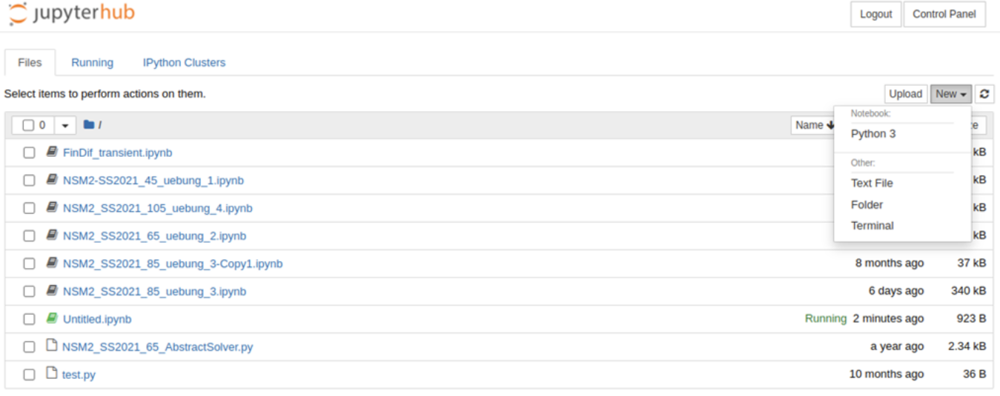
- New öffnet ein Popup zum Starten eines Notebooks (Python 3) oder eines Terminals
- Anzeige der gespeicherten und laufenden Notebooks sowie alle Dateien im home Verzeichnis
- Die Daten auf dem Hub werden nicht gesichert. Falls notwendig und gewünscht legen Sie sich privat eine Kopie an.
Jupyterhub
Startseite unter hub.bwjupyter.de
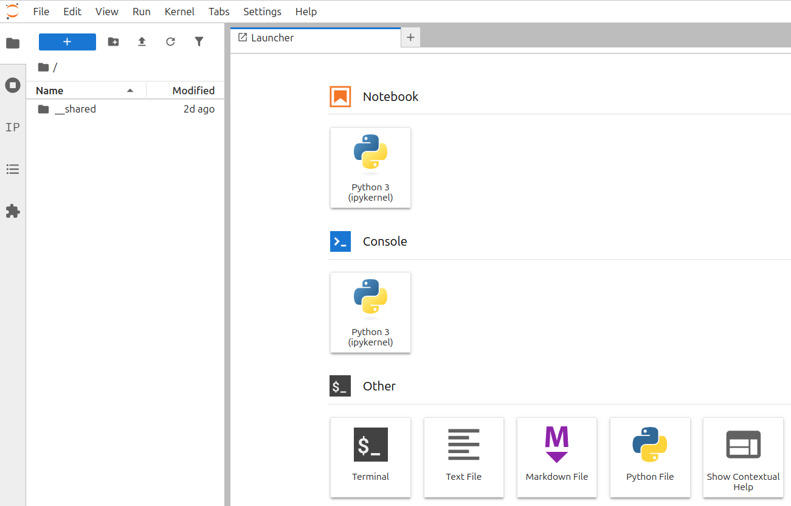
- Das korrekte Abbild bekommen Sie hier.
- Nachdem das Profil geladen ist, sehen Sie die Startseite.
- Durch einen Klick auf Python 3 in der Rubrik Notebook können Sie ein neues Notebook starten.
- Ein Klick auf Terminal startet ein Terminal.
Jupyterhub
Das erste Notebook
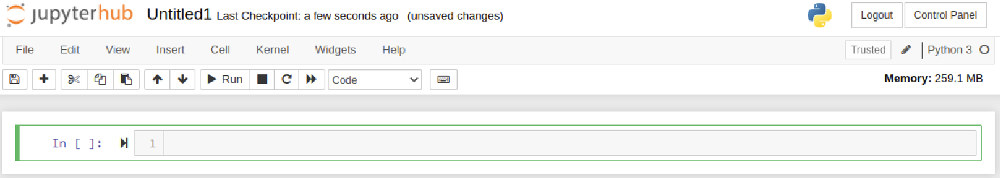
- Neben manuellem Speichern wird regelmäßig automatisch gespeichert
- Durch Anklicken des Namens (Untitled1), können Sie diesen ändern.
- Zellen werden mit Quelltext befüllt und durch
Shift+Enterausgeführt.
Jupyterhub
Der erste Code
Kopieren Sie den folgenden Quelltext in die erste Zelle und führen Sie diese mit Shift + Enter aus:
import matplotlib
%matplotlib ipympl
import matplotlib.pyplot as pyplot
import numpy as npErstellen Sie ein eindimensionales Datenfeld durch
xx = np.arange(0,20,0.1)und geben Sie den Inhalt durch
print(xx)auf die Ausgabe aus.
Jupyterhub
Die erste Abbildung
Der folgende Quelltext erzeugt die gezeigte Abbildung:
Jupyterhub
Wie bekomme ich die Notebooks für die Übung?
Starten Sie ein Terminal auf dem Hub.
Repository mit git klonen.
cd work && git clone -b move-to-kit https://github.com/atismer/nso2-notebooks.gitwww.jupyterhub.ihs.uni-stuttgart.de
git clone https://github.com/atismer/nso2-notebooks.gitJupyterhub
Wie kann ich mir helfen?
Für viele Python-Objekte erhalten Sie durch die Funktion
helpeine Ausgabe, z.B. für den Befehlplot:import matplotlib import matplotlib.pyplot as plt help(plt.plot)Durch Drücken der Taste Tabulator erhalten Sie die Autovervollständigung.
import matplotlib
import matplotlib.pyplot as plt
help(plt.plot)Help on function plot in module matplotlib.pyplot:
plot(*args: 'float | ArrayLike | str', scalex: 'bool' = True, scaley: 'bool' = True, data=None, **kwargs) -> 'list[Line2D]'
Plot y versus x as lines and/or markers.
Call signatures::
plot([x], y, [fmt], *, data=None, **kwargs)
plot([x], y, [fmt], [x2], y2, [fmt2], ..., **kwargs)
The coordinates of the points or line nodes are given by *x*, *y*.
The optional parameter *fmt* is a convenient way for defining basic
formatting like color, marker and linestyle. It's a shortcut string
notation described in the *Notes* section below.
>>> plot(x, y) # plot x and y using default line style and color
>>> plot(x, y, 'bo') # plot x and y using blue circle markers
>>> plot(y) # plot y using x as index array 0..N-1
>>> plot(y, 'r+') # ditto, but with red plusses
You can use `.Line2D` properties as keyword arguments for more
control on the appearance. Line properties and *fmt* can be mixed.
The following two calls yield identical results:
>>> plot(x, y, 'go--', linewidth=2, markersize=12)
>>> plot(x, y, color='green', marker='o', linestyle='dashed',
... linewidth=2, markersize=12)
When conflicting with *fmt*, keyword arguments take precedence.
**Plotting labelled data**
There's a convenient way for plotting objects with labelled data (i.e.
data that can be accessed by index ``obj['y']``). Instead of giving
the data in *x* and *y*, you can provide the object in the *data*
parameter and just give the labels for *x* and *y*::
>>> plot('xlabel', 'ylabel', data=obj)
All indexable objects are supported. This could e.g. be a `dict`, a
`pandas.DataFrame` or a structured numpy array.
**Plotting multiple sets of data**
There are various ways to plot multiple sets of data.
- The most straight forward way is just to call `plot` multiple times.
Example:
>>> plot(x1, y1, 'bo')
>>> plot(x2, y2, 'go')
- If *x* and/or *y* are 2D arrays, a separate data set will be drawn
for every column. If both *x* and *y* are 2D, they must have the
same shape. If only one of them is 2D with shape (N, m) the other
must have length N and will be used for every data set m.
Example:
>>> x = [1, 2, 3]
>>> y = np.array([[1, 2], [3, 4], [5, 6]])
>>> plot(x, y)
is equivalent to:
>>> for col in range(y.shape[1]):
... plot(x, y[:, col])
- The third way is to specify multiple sets of *[x]*, *y*, *[fmt]*
groups::
>>> plot(x1, y1, 'g^', x2, y2, 'g-')
In this case, any additional keyword argument applies to all
datasets. Also, this syntax cannot be combined with the *data*
parameter.
By default, each line is assigned a different style specified by a
'style cycle'. The *fmt* and line property parameters are only
necessary if you want explicit deviations from these defaults.
Alternatively, you can also change the style cycle using
:rc:`axes.prop_cycle`.
Parameters
----------
x, y : array-like or float
The horizontal / vertical coordinates of the data points.
*x* values are optional and default to ``range(len(y))``.
Commonly, these parameters are 1D arrays.
They can also be scalars, or two-dimensional (in that case, the
columns represent separate data sets).
These arguments cannot be passed as keywords.
fmt : str, optional
A format string, e.g. 'ro' for red circles. See the *Notes*
section for a full description of the format strings.
Format strings are just an abbreviation for quickly setting
basic line properties. All of these and more can also be
controlled by keyword arguments.
This argument cannot be passed as keyword.
data : indexable object, optional
An object with labelled data. If given, provide the label names to
plot in *x* and *y*.
.. note::
Technically there's a slight ambiguity in calls where the
second label is a valid *fmt*. ``plot('n', 'o', data=obj)``
could be ``plt(x, y)`` or ``plt(y, fmt)``. In such cases,
the former interpretation is chosen, but a warning is issued.
You may suppress the warning by adding an empty format string
``plot('n', 'o', '', data=obj)``.
Returns
-------
list of `.Line2D`
A list of lines representing the plotted data.
Other Parameters
----------------
scalex, scaley : bool, default: True
These parameters determine if the view limits are adapted to the
data limits. The values are passed on to
`~.axes.Axes.autoscale_view`.
**kwargs : `~matplotlib.lines.Line2D` properties, optional
*kwargs* are used to specify properties like a line label (for
auto legends), linewidth, antialiasing, marker face color.
Example::
>>> plot([1, 2, 3], [1, 2, 3], 'go-', label='line 1', linewidth=2)
>>> plot([1, 2, 3], [1, 4, 9], 'rs', label='line 2')
If you specify multiple lines with one plot call, the kwargs apply
to all those lines. In case the label object is iterable, each
element is used as labels for each set of data.
Here is a list of available `.Line2D` properties:
Properties:
agg_filter: a filter function, which takes a (m, n, 3) float array and a dpi value, and returns a (m, n, 3) array and two offsets from the bottom left corner of the image
alpha: float or None
animated: bool
antialiased or aa: bool
clip_box: `~matplotlib.transforms.BboxBase` or None
clip_on: bool
clip_path: Patch or (Path, Transform) or None
color or c: :mpltype:`color`
dash_capstyle: `.CapStyle` or {'butt', 'projecting', 'round'}
dash_joinstyle: `.JoinStyle` or {'miter', 'round', 'bevel'}
dashes: sequence of floats (on/off ink in points) or (None, None)
data: (2, N) array or two 1D arrays
drawstyle or ds: {'default', 'steps', 'steps-pre', 'steps-mid', 'steps-post'}, default: 'default'
figure: `~matplotlib.figure.Figure` or `~matplotlib.figure.SubFigure`
fillstyle: {'full', 'left', 'right', 'bottom', 'top', 'none'}
gapcolor: :mpltype:`color` or None
gid: str
in_layout: bool
label: object
linestyle or ls: {'-', '--', '-.', ':', '', (offset, on-off-seq), ...}
linewidth or lw: float
marker: marker style string, `~.path.Path` or `~.markers.MarkerStyle`
markeredgecolor or mec: :mpltype:`color`
markeredgewidth or mew: float
markerfacecolor or mfc: :mpltype:`color`
markerfacecoloralt or mfcalt: :mpltype:`color`
markersize or ms: float
markevery: None or int or (int, int) or slice or list[int] or float or (float, float) or list[bool]
mouseover: bool
path_effects: list of `.AbstractPathEffect`
picker: float or callable[[Artist, Event], tuple[bool, dict]]
pickradius: float
rasterized: bool
sketch_params: (scale: float, length: float, randomness: float)
snap: bool or None
solid_capstyle: `.CapStyle` or {'butt', 'projecting', 'round'}
solid_joinstyle: `.JoinStyle` or {'miter', 'round', 'bevel'}
transform: unknown
url: str
visible: bool
xdata: 1D array
ydata: 1D array
zorder: float
See Also
--------
scatter : XY scatter plot with markers of varying size and/or color (
sometimes also called bubble chart).
Notes
-----
.. note::
This is the :ref:`pyplot wrapper <pyplot_interface>` for `.axes.Axes.plot`.
**Format Strings**
A format string consists of a part for color, marker and line::
fmt = '[marker][line][color]'
Each of them is optional. If not provided, the value from the style
cycle is used. Exception: If ``line`` is given, but no ``marker``,
the data will be a line without markers.
Other combinations such as ``[color][marker][line]`` are also
supported, but note that their parsing may be ambiguous.
**Markers**
============= ===============================
character description
============= ===============================
``'.'`` point marker
``','`` pixel marker
``'o'`` circle marker
``'v'`` triangle_down marker
``'^'`` triangle_up marker
``'<'`` triangle_left marker
``'>'`` triangle_right marker
``'1'`` tri_down marker
``'2'`` tri_up marker
``'3'`` tri_left marker
``'4'`` tri_right marker
``'8'`` octagon marker
``'s'`` square marker
``'p'`` pentagon marker
``'P'`` plus (filled) marker
``'*'`` star marker
``'h'`` hexagon1 marker
``'H'`` hexagon2 marker
``'+'`` plus marker
``'x'`` x marker
``'X'`` x (filled) marker
``'D'`` diamond marker
``'d'`` thin_diamond marker
``'|'`` vline marker
``'_'`` hline marker
============= ===============================
**Line Styles**
============= ===============================
character description
============= ===============================
``'-'`` solid line style
``'--'`` dashed line style
``'-.'`` dash-dot line style
``':'`` dotted line style
============= ===============================
Example format strings::
'b' # blue markers with default shape
'or' # red circles
'-g' # green solid line
'--' # dashed line with default color
'^k:' # black triangle_up markers connected by a dotted line
**Colors**
The supported color abbreviations are the single letter codes
============= ===============================
character color
============= ===============================
``'b'`` blue
``'g'`` green
``'r'`` red
``'c'`` cyan
``'m'`` magenta
``'y'`` yellow
``'k'`` black
``'w'`` white
============= ===============================
and the ``'CN'`` colors that index into the default property cycle.
If the color is the only part of the format string, you can
additionally use any `matplotlib.colors` spec, e.g. full names
(``'green'``) or hex strings (``'#008000'``).
Jupyterhub
Wie kann ich mir helfen?
Die Ausführung von
plt.plot(xx,np.sqrt(xx), 'kl')erzeugt einen Fehler.
Wichtig: Ruhe bewahren!
Versuchen Sie sich selber zu helfen. Je öfter Sie den Fehler suchen und versuchen diesen zu beheben, desto besser werden Sie darin. In der Regel steht der Fehler ganz unten. Der obere Teil enthält meist ein Backtrace und listet alle bis zum Fehler aufgerufenen Funktionen.
---------------------------------------------------------------------------
ValueError Traceback (most recent call last)
Cell In[1], line 7
5 xx = np.arange(0,20,0.1)
6 plt.figure(1, figsize=[10,3])
----> 7 plt.plot(xx,np.sqrt(xx), 'kl')
File /opt/conda/lib/python3.12/site-packages/matplotlib/pyplot.py:3827, in plot(scalex, scaley, data, *args, **kwargs)
3819 @_copy_docstring_and_deprecators(Axes.plot)
3820 def plot(
3821 *args: float | ArrayLike | str,
(...) 3825 **kwargs,
3826 ) -> list[Line2D]:
-> 3827 return gca().plot(
3828 *args,
3829 scalex=scalex,
3830 scaley=scaley,
3831 **({"data": data} if data is not None else {}),
3832 **kwargs,
3833 )
File /opt/conda/lib/python3.12/site-packages/matplotlib/axes/_axes.py:1777, in Axes.plot(self, scalex, scaley, data, *args, **kwargs)
1534 """
1535 Plot y versus x as lines and/or markers.
1536
(...) 1774 (``'green'``) or hex strings (``'#008000'``).
1775 """
1776 kwargs = cbook.normalize_kwargs(kwargs, mlines.Line2D)
-> 1777 lines = [*self._get_lines(self, *args, data=data, **kwargs)]
1778 for line in lines:
1779 self.add_line(line)
File /opt/conda/lib/python3.12/site-packages/matplotlib/axes/_base.py:297, in _process_plot_var_args.__call__(self, axes, data, return_kwargs, *args, **kwargs)
295 this += args[0],
296 args = args[1:]
--> 297 yield from self._plot_args(
298 axes, this, kwargs, ambiguous_fmt_datakey=ambiguous_fmt_datakey,
299 return_kwargs=return_kwargs
300 )
File /opt/conda/lib/python3.12/site-packages/matplotlib/axes/_base.py:444, in _process_plot_var_args._plot_args(self, axes, tup, kwargs, return_kwargs, ambiguous_fmt_datakey)
441 if len(tup) > 1 and isinstance(tup[-1], str):
442 # xy is tup with fmt stripped (could still be (y,) only)
443 *xy, fmt = tup
--> 444 linestyle, marker, color = _process_plot_format(
445 fmt, ambiguous_fmt_datakey=ambiguous_fmt_datakey)
446 elif len(tup) == 3:
447 raise ValueError('third arg must be a format string')
File /opt/conda/lib/python3.12/site-packages/matplotlib/axes/_base.py:192, in _process_plot_format(fmt, ambiguous_fmt_datakey)
190 i += len(cn_color[0])
191 else:
--> 192 raise ValueError(errfmt.format(fmt, f"unrecognized character {c!r}"))
194 if linestyle is None and marker is None:
195 linestyle = mpl.rcParams['lines.linestyle']
ValueError: 'kl' is not a valid format string (unrecognized character 'l')